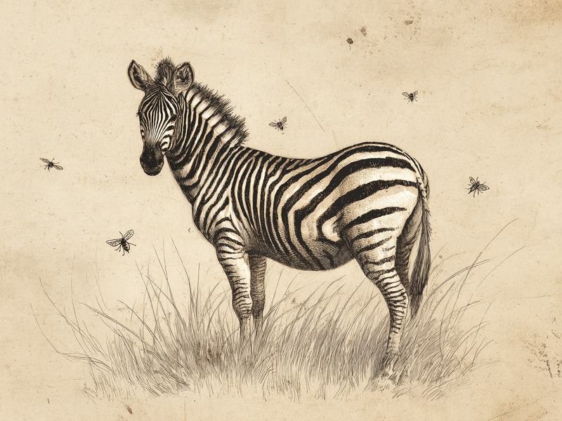

シマウマの縞模様は、吸血バエやアブに刺されにくくするための模様だと考えられているそうです。ハエの多い地域ほど、縞が濃くなっていたのです。 Zebra stripes appear to be a defense against biting flies: the more biting flies in a region, the bolder the stripes.
5つの仮説を地図で比べた研究
シマウマの縞模様については、昔からいくつもの説が語られてきました。敵から姿を隠す迷彩、群れで走ると輪郭がぼやけて捕食者を惑わせる効果、体温を調節する働き、仲間どうしを見分ける社会的な役割、そして吸血バエ(ツェツェバエやアブ)を寄せつけない効果。この5つの仮説をまとめて比べたのが、カリフォルニア大学デービス校のTim Caro教授らの研究チームだそうです。研究チームは、シマウマ・ウマ・ロバとその亜種7種について、どの地域にどんな模様の個体がすんでいるかという地理的な分布データを分析しました。すると、吸血バエやアブの生息密度が高い地域ほど、縞模様が濃く発達しているという強い相関(結びつき)が確認されたのです。Caro教授も、吸血バエの被害が多い地域ほど、体の各部位の縞が濃くなっていたと述べています。
出典: UC Davis「Scientists Solve Riddle of Zebras' Stripes」2014年4月 ucdavis.edu
なぜ「ハエ説」が有力になったのか
この研究の面白いところは、5つの仮説を同じ土俵に乗せて比べた点にあります。迷彩や捕食者の混乱、体温管理、社会的な役割も、それぞれ筋の通った説ではあります。けれども地理的な分布と照らし合わせたとき、縞の濃さときれいに重なったのは吸血バエ・アブの密度だったのだそうです。しかも縞の濃淡は全身で一様ではなく、体の部位ごとに差があります。その部位ごとの濃さまでが、ハエの被害の多さと対応していたというのですから、偶然とは考えにくいわけです。あの目立つ縞模様は、敵から隠れるためでも仲間を見分けるためでもなく、小さな吸血バエから身を守るためのものかもしれない。そう考えると、草原を歩くシマウマの姿が少し違って見えてくるのです。
5つの仮説を横並びで検証するという手法自体が、この研究の説得力を高めています。単に「それらしい説」を唱えるだけでなく、実際の分布データと突き合わせて確かめたからこそ、吸血バエ説が有力候補として浮かび上がったのです。